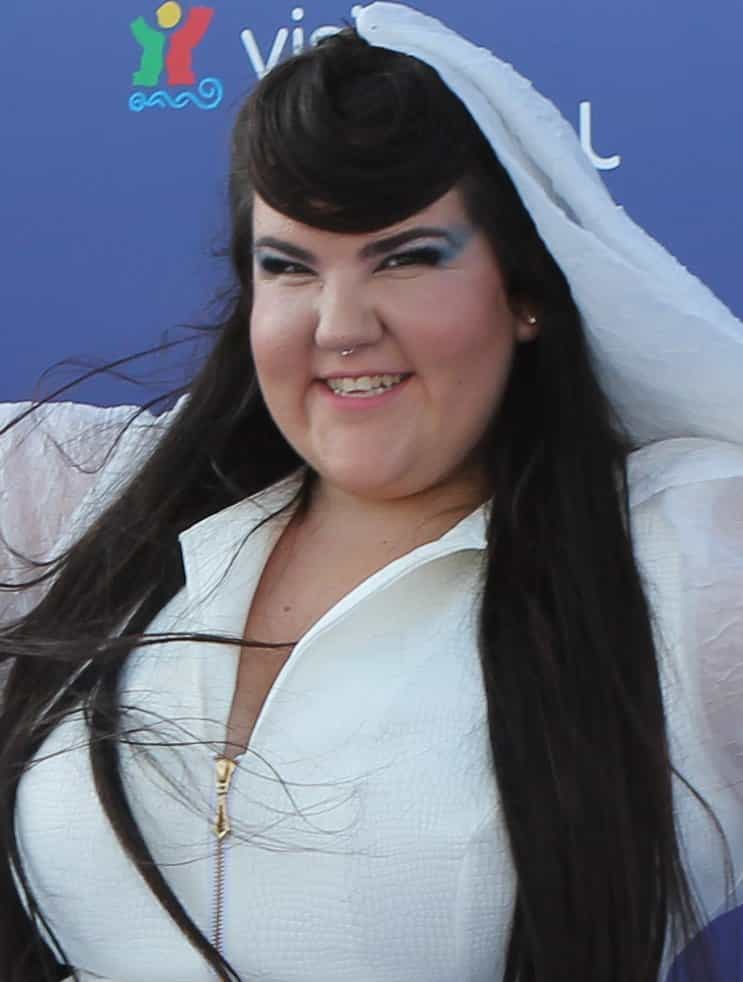

After a numbing three-course meal, in tandem with family members and relatives, I felt lethargic enough to lay down on a big couch and watch the current year’s version of Eurovision Song Contest, for the first time in many years. Here are my thoughts on this hideous debacle.
Although this international pop song competition is a full display of plebeian mediocrity, I was actually a bit surprised by the fairly high quality of several finalists (26 in total, of which some are not European in the strict sense, with Australia as the most conspicuous geographic outlier). Denmark’s touch of Viking march was not so bad, and neither were Lithuania’s ballad and Czech Republic’s catchy tune. Sweden, not surprisingly, offered a metrosexual Justin Bieber wannabe.
Estonia’s contribution – with clear margin the best of them all – is a great manifestation of traditional elements in a contemporary context: Elina Nechayeva’s high-pitched, impeccable voice, slim figure, feminine and gracious appearance are all but stunning features. My girlfriend stressed that Jennifer Lopez had used the same type of digitized bio-luminescent dress some years ago, but the latter is practically grandma these days so who cares anyway? I was sold in any case.
However, there was indeed a little problem with how it all ended, after hours of performances, multiple quick reviews, and opportunity to vote. When national jury members and the corresponding TV audiences have had their say, there was no Estonian songbird standing on stage in order to deliver the winning melody one more time.
Instead, a clucking roly-poly from Israel called Netta had won the hearts of the globohomo community. With a clear margin she won before the more conventional Cyprus contribution, whose female vocalist at least was rather hot.
The fact that this Talmudic beluga whale managed to win is yet another sign of how far the West has sunken in a cultural sense. Sure, there are still people with a semi-traditional preference who vote for Estonia (who finished in eighth place), and Cyprus was not so far after, but the aversion against hierarchization of aesthetic qualities is still equally blatant and troublesome. The empress is naked and it’s not a beautiful sight to behold.
Here are some of the lyrical lines from the winning song “Toy”:
Look at me, I’m a beautiful creature
I don’t care about your modern-time preachers
Welcome boys, too much noise, I will teach ya
Pam pam pa hoo, prram pam pa hoo
Hey, I think you forgot how to play
My teddy bear’s running away
The Barbie got somethin’ to say, hey, hey, hey
Hey! My “Simon says” leave me alone
I’m taking my Pikachu home
You’re stupid just like your smartphone

Well, beauty is in fact not so subjective, but one can always use imagination when being resentful against Israeli jocks. I am not so sure of Pokemon wanting to be abducted by an amorphous version of Björk, either.
There is always a symbolic struggle going on between the common sense right and the regressive left. This year’s winner of the Eurovision Song Contest indicates that even the mainstream has been severely penetrated by social justice concepts and aesthetics, fat acceptance to be specific. Perhaps even mega pop stars like Ariana Grande will go back to the former fluffy version of her teenage self during the Victorious days, since obesity will be the new black. To the extent that mainstream music matters, masculine men should continue to support traditional talents like Elina Nechayeva.
Read More: Ariana Grande Sexualizes Her Entire Image For Years Then Demands People Focus On The Music